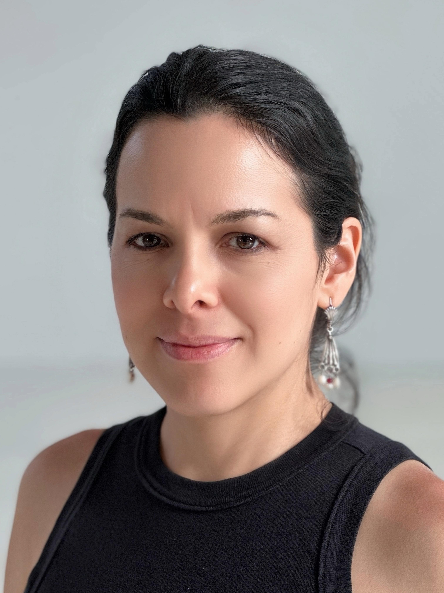

<!DOCTYPE html>
<html>
<head>
	<meta charset="utf-8">
	<meta name="viewport" content="width=device-width, initial-scale=1">
	<title></title>
</head>
<body>

</body>
</html>


 <head>
<link rel="preconnect" href="https://fonts.googleapis.com">
  <link rel="preconnect" href="https://fonts.gstatic.com" crossorigin>
  <link href="https://fonts.googleapis.com/css2?family=Roboto:ital,wght@0,100..900;1,100..900&display=swap" rel="stylesheet">

  <link rel="stylesheet" href="style.css">
</head>


<body>

  <div class="header">
    
    <div class="text-container">
      <strong>MAJO CORTES</strong>
      <p>JOURNALIST</p>
      <p>Contact info <br>
        3 Sutton St. Brooklyn, NY <br>
        E-mail: marcortes2@gmail.com <br>
        T. 347 988 2965 <br>
        Instagram: @marijosecortes
      </p>
    </div>
  </div>

</body>


<h2><strong> ABOUT ME </strong> </h2>

<div class="about-text">
  <p>I have over 15 years of journalism experience creating content for both traditional media and social media channels in Mexico and the United States. Since 2025, I’ve been based in Brooklyn, specializing in stories about Latino communities across the New York City metropolitan area.</p>

  <p>My career has led me to work with people from diverse backgrounds: journalists, human rights defenders, marketing and public relations experts, agricultural engineers, among others. These experiences have shown me the unique value of each person and helped me recognize how, in a supportive work environment, every individual can meaningfully contribute to a shared goal.</p>

  <p>As journalism and digital marketing continue to evolve, I’ve come to embrace humility as a core professional value, guided by the saying: “what we know is a drop; what we don’t know is an ocean.”</p>
</div>
 	


<h2><strong> EXPERIENCE </strong> </h2>
	<p>Corporate Affairs External Communications Coordinator. <strong>PepsiCo Mexico </strong> jun 2021 – july 2025 </p>
<p>Editorial Coordinator at <strong>Editorial Planeta </strong> – Freelance contributor. 2016 – 2021 </p>
<p>Freelance journalist. <strong>Univision </strong> 2016 – 2017 </p>


	<h2><strong> EDUCATION </strong> </h2>
		<p>Universidad Veracruzana. </p>
<p>Bachelor's degree, Communications Studies. 2002 - 2006</p>
<p>Craig Newmark Graduate School of Journalism at CUNY. </p>
<p>M.A. Candidate in Bilingual Journalism. Ago. 2025 - dic. 2026</p>
 

		<h2><strong> SKILLS </strong> </h2>

			<p>Bilingual storytelling, multimedia journalism, content planning and editing, brand messaging, </p>
      <p>corporate storytelling and reputation management. </p>


